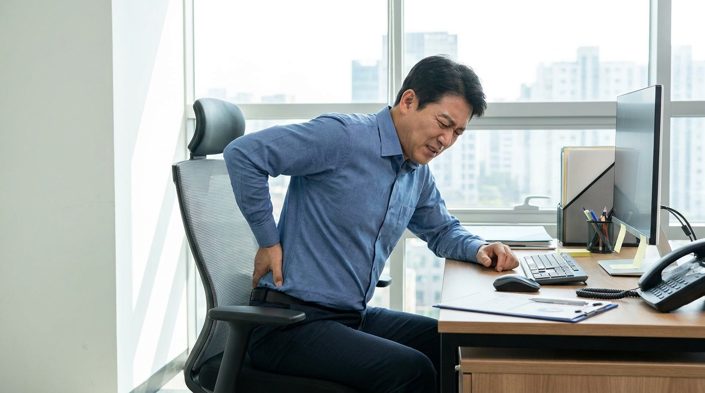
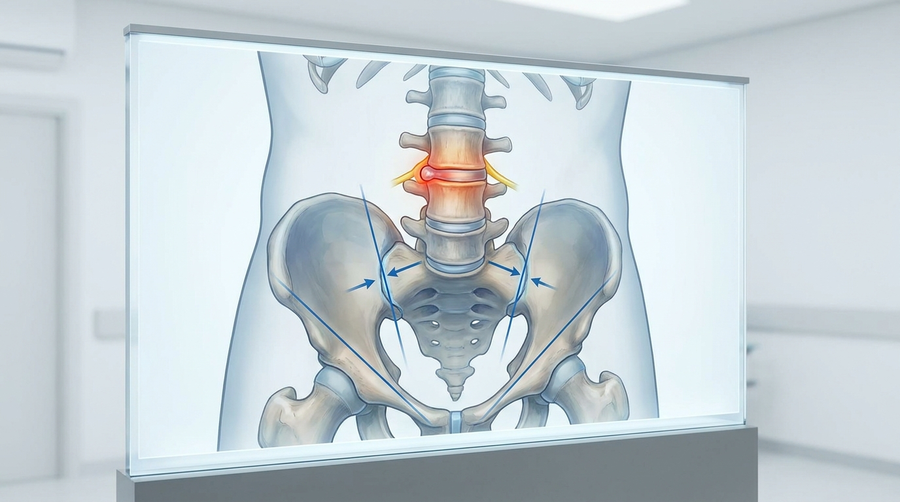

요추 추간판 탈출증과 척추 수기 치료의 구조적 상관관계
장시간 앉아 있거나 무거운 물건을 든 후 허리에서 시작되어 다리로 뻗치는 저림과 통증은 단순 근육통과는 다른 신경학적 신호일 가능성이 높다. 특히 기침이나 재채기를 할 때 통증이 심해지거나, 다리에 힘이 빠지는 증상을 동반한다면 요추 추간판 탈출증(허리 디스크)을 의심해 보아야 한다. 이는 척추뼈 사이의 디스크가 압박을 받아 신경근을 자극하는 상태로, 정확한 구조적 진단과 그에 맞는 치료적 개입이 필수적이다.
1. 요추 추간판 탈출증의 임상적 정의와 병태생리
요추 추간판 탈출증은 척추뼈 사이에서 완충 역할을 하는 디스크의 수핵이 섬유륜의 파열을 뚫고 밖으로 밀려 나와 척추관 내의 신경근을 압박하는 질환을 의미한다. 이는 단순한 국소 부위의 문제로 발생하는 것이 아니라, 척추 전체의 정렬 불균형이나 반복적인 하중이 누적되어 나타나는 구조적 결과물로 해석된다. 실제로 임상 현장에서는 MRI 상 명확한 디스크 탈출이 확인되더라도, 통증의 강도가 골반과 천장관절의 가동성 여부에 따라 크게 달라지는 경우가 관찰된다.
2. 척추 수기 치료(Spinal Manipulation)의 구조적 개입 근거

MRI로 확진된 요추 추간판 탈출증 및 천장관절 가동성 제한을 동반한 환자군을 대상으로 한 준실험적 연구에 따르면, 척추 수기 치료는 단순한 통증 완화를 넘어 구조적 정렬 회복에 유의미한 개입 방법으로 제시된다. 이는 척추 추체 간의 정렬과 골반 천장관절의 생체역학적 균형을 함께 고려해야 한다는 임상적 근거를 뒷받침한다[1]. 바디올한의원의 생체역학적 공간 감압 추나(SART Protocol) 역시 이러한 임상적 관점을 계승하여, 요추 추간판 탈출증 치료 시 특정 분절 하나에 국한하지 않고 골반과 척추간공 전체의 정렬 및 유착된 연부조직의 유동성을 정밀하게 회복시키는 것을 핵심 기전으로 삼는다.
3. 급성 및 만성 디스크 환자에 대한 장기 예후 분석
추간판 탈출증 치료에서 중요한 것은 단기적인 통증 감소뿐만 아니라 장기적인 재발 방지 및 기능 회복이다. MRI로 증상성 확진을 받은 급성 및 만성 요추 추간판 탈출증 환자를 대상으로 고속 저강도(High-Velocity, Low-Amplitude) 척추 수기 치료를 시행하고 1년간 장기 추적 관찰한 전향적 코호트 연구는, 급성기뿐만 아니라 만성화된 환자군에서도 정교한 힘 조절을 통한 비수술적 도수 치료가 장기적인 관점에서 유의미한 임상적 개입 수단이 될 수 있음을 시사한다[2]. 이는 바디올한의원의 생체역학적 공간 감압 추나(SART Protocol)가 급격한 물리적 충격 없이 정밀한 압력 제어를 통해 척추간공의 압박을 완화하고 신경근의 유동성을 확보하는 원리와 이론적 궤를 같이 한다.
4. 접근 방식별 구조적 개입 비교 분석
요추 추간판 탈출증에 대한 다양한 치료적 접근은 그 목적과 방식에 따라 명확한 차이를 보인다. 아래 표는 단순 대증 치료와 구조적 정렬을 목표로 하는 정밀 수기 치료 접근의 차이를 비교한 것이다.
| 구분 | 단순 대증 치료 (약물/휴식) | 정밀 수기 치료 (SART Protocol) |
|---|---|---|
| 접근 범위 | 국소 통증 부위 완화 | 골반-척추간공 전체 정렬 |
| 목표 | 일시적 염증 및 통증 관리 | 연부조직 유동성 및 신경근 압박 해소 |
| 물리적 특성 | 수동적 안정 | 정밀 압력 제어 기반 능동적 개선 |
| 장기적 관점 | 재발 가능성 존재 | 구조적 재발 방지 도모 |
5. 진단 및 치료 프로세스 종합 정리
핵심 요약: 요추 추간판 탈출증은 단순 디스크 압박의 문제가 아니라 골반과 척추 전체의 생체역학적 정렬 문제로 접근해야 한다. 척추 수기 치료 관련 학술 연구들은 정밀한 압력 조절을 통한 구조적 개입이 급성 및 만성 환자 모두에게 장기적으로 유의미한 결과를 가져올 수 있음을 시사하며, 이는 정확한 MRI 진단을 바탕으로 한 체계적인 치료 계획 수립이 선행되어야 함을 의미한다.
결론적으로 요추 추간판 탈출증의 관리는 단기적인 증상 완화에 그치지 않고, 척추 및 골반의 전체적인 생체역학적 균형을 회복시키는 방향으로 이루어져야 한다. 이는 정밀한 진단 하에 개인의 상태에 맞는 체계적인 접근이 필요함을 시사한다.